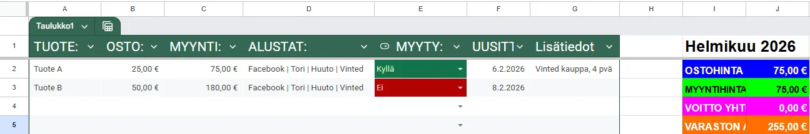

Lyhyesti
- Nopein tapa saada rahaa on myydä tavaraa, jota sinulla jo on – tai jota saat ilmaiseksi.
- Hyvät kuvat, informatiivinen otsikko ja rehellinen kuvaus myyvät. Hinnalla ei tarvitse kilpailla.
- Julkaise sama ilmoitus samaan aikaan kaikilla kauppapaikoilla: Torissa, Vintedissä, Facebook Marketplacessa ja Huuto.netissä.
- Kirjaa jokainen kauppa taulukkoon. Data kertoo, mitä kannattaa myydä ja missä.
Moni kysyy jatkuvasti: ”Mistä rahaa nyt?” tai ”Miten saan rahaa nopeasti?” Samaan aikaan heidän ympärillään lojuu valtava määrä tavaraa, jonka voisi muuttaa rahaksi. Sosiaalisen median aikakausi on tuonut mukanaan mukavuudenhalua: ihmiset etsivät helppoa rahaa tekemättä itse mitään.
Todellisuudessa nopein tapa saada rahaa vaatii vähän toimintaa. Se on silti täysin mahdollista – jopa alle vuorokaudessa.
Tämä opas toimii vain, jos oikeasti luet sen ja teet jokaisen vaiheen hyppäämättä yhtäkään yli. Esittelen yhden maailman helpoimmista ja varmimmista tavoista tehdä rahaa nopeasti: tavaran flippaamisen.
Vaihe 1: Etsi viisi esinettä
Etsi kotoasi juuri nyt vähintään viisi esinettä, joihin et ole koskenut viimeisen kuukauden aikana. Ne voivat olla mitä tahansa, kunhan niistä voi saada rahaa etkä itse enää tarvitse niitä.
Entä jos kotoa ei löydy yhtäkään? Sekään ei estä aloittamista. Mene Facebookin paikallisiin Annetaan-ryhmiin tai selaa tori.fi annetaan -osastoa. Sieltä löytyy päivittäin tuhansia ilmaisia tuotteita. Kun haet niitä ja myyt eteenpäin, saat rahaa sijoittamatta euroakaan omaa rahaa.
Miten teet myynti-ilmoituksen, jolla syntyy kauppaa?
Laadukas myynti-ilmoitus ei ole rakettitiedettä, mutta se vaatii huolellisuutta. Käy nämä vaiheet läpi jokaisen esineen kohdalla.
Kuvaa esine kunnolla
Kuvaa jokainen esine useasta kuvakulmasta. Ota aluksi vähintään 20 kuvaa jokaisesta. Suosi luonnonvaloa, niin kuvista tulee edustavia. Valitse lopuksi viisi parasta ilmoitukseen.
Miksi näin monta kuvaa? Koska samalla opit tuotekuvauksen perusteet. Tämä opas ei opeta vain kertaluontoista rahantekoa. Se antaa ansaintamallin, jolla voit tienata jatkuvasti.
Tee lyhyt markkinatutkimus
Etsi vastaavia tuotteita Torista, Facebook Marketplacesta ja Vintedistä. Katso, mitä muut pyytävät, millaisia kuvia heillä on ja millaisia otsikoita he käyttävät.
Tehtäväsi on erottua kaikista muista. Älä polje hintoja. Kilpaile paremmilla kuvilla, luotettavuudella ja iskevällä otsikolla. Kun opit tekemään klikkejä keräävät otsikot ja kuvat, kauppa alkaa käydä.
Kirjoita otsikko, joka kertoo kaiken
Valitse paras kuva pääkuvaksi. Kun kirjoitat otsikkoa, älä tee kuten muut, jotka kirjoittavat pelkän ”Playstation 4” tai ”Miesten farkut”. Tee otsikosta informatiivinen: ”Playstation 4 + 2 ohjainta + 12 peliä (heti valmis paketti)” on paljon houkuttelevampi kuin pelkkä laitteen nimi.
Etkö osaa tehdä hyviä otsikoita tai arvioida hintoja? Avuksi on tehty valmis Resell Assistant (Arbitrage Price Analyst) -tekoälytyökalu. Sillä voit luoda tehokkaita myynti-ilmoituksia ja analysoida markkinahintoja.
Kerro kuvauksessa kaikki rehellisesti
Kerro tuotteesta laajasti ja rehellisesti:
- tarkka kunto ja ikä
- mahdollinen takuu
- mukana tulevat lisävarusteet
- miten kauppa tehdään: käteinen, MobilePay, nouto tai postitus.
Nämä tiedot poistavat ostajan epäilyt ja vievät kaupan suoraan maaliin.
Money glitch: julkaise kaikkialla yhtä aikaa
Lähes jokainen flippausopas tai -kurssi joko maksaa paljon tai jättää tämän kriittisen asian kertomatta. Nopea kauppa ei riipu pelkästään yksittäisestä ilmoituksesta.
Lopeta googlaaminen hakusanoilla ”Facebook Marketplace vai Vinted” tai ”Vinted vai Tori”. Ajattele kauppapaikkoja kuin sosiaalisen median alustoja. Osa ihmisistä käyttää vain Instagramia, osa viettää aikansa vain TikTokissa. Sama pätee ostajiin: osa selaa vain Vintediä, osa käyttää pelkkää Toria ja osa ostaa tavaransa Facebook Marketplacesta tai Huuto.netistä.
Julkaise siksi jokainen myynti-ilmoitus aina samaan aikaan Vintediin, Toriin, Facebook Marketplaceen ja Huuto.netiin.
Näin ilmoituksesi tavoittaa heti mahdollisimman monta ostajaa. Ajan myötä huomaat, että tietyt tuotteet menevät nopeammin kaupaksi tietyissä paikoissa – esimerkiksi vaatteet Vintedissä ja elektroniikka Torissa. Kun tuote myy yhdessä paikassa, poista ilmoitus muualta heti, ettet myy samaa tavaraa kahdesti.
Seuraa dataa: mikä alusta ja mikä tuote toimii?

Mistä tiedät varmasti, mikä alusta toimii parhaiten ja mikä tuote liikkuu nopeimmin? Kirjaa data ylös esimerkiksi Google Sheets -taulukkoon. Seuraa ainakin näitä:
- missä kauppapaikassa tuote meni kaupaksi
- kuinka nopeasti kauppa syntyi (myyntiaika)
- mikä oli hankintahinta (0 €, jos tuote oli kotoa tai ilmaisosastolta)
- mikä oli lopullinen myyntihinta ja paljonko käteen jäi puhdasta voittoa.
Datan avulla tiedät jatkossa tarkalleen, mihin tuoteryhmiin kannattaa panostaa, mitä alustoja painottaa ja mitkä tuotteet kannattaa suosiolla jättää väliin. Tämä on ammattilaisten todellinen salaisuus: näin satunnaisesta tavaran myynnistä rakennetaan säännöllinen tulonlähde.
Huomaa verotus. Oman, henkilökohtaisessa käytössä olleen tavaran myynti on yleensä verovapaata, kun myyt sen tappiolla tai luovutushinnat jäävät vuodessa enintään 5 000 euroon. Kun ostat tai haet tavaraa nimenomaan myydäksesi sen eteenpäin, voitto on veronalaista tuloa. Kauppapaikat ilmoittavat Verohallinnolle myyjät, joilla on vuodessa vähintään 30 myyntiä tai yli 2 000 euron myynnit. Tarkista oma tilanteesi vero.fi:stä.
Mitä teet tänään
- Kerää viisi esinettä, joita et ole käyttänyt kuukauteen – tai hae ne ilmaisosastolta.
- Kuvaa ne luonnonvalossa ja tutki vastaavien tuotteiden ilmoitukset.
- Kirjoita informatiiviset otsikot ja rehelliset kuvaukset.
- Julkaise ilmoitukset kaikilla neljällä alustalla samaan aikaan.
- Avaa taulukko ja kirjaa jokainen kauppa.